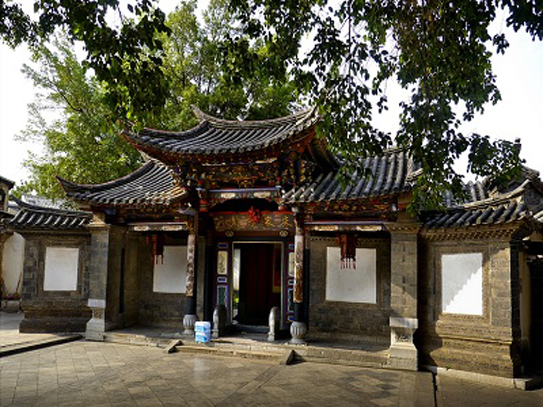
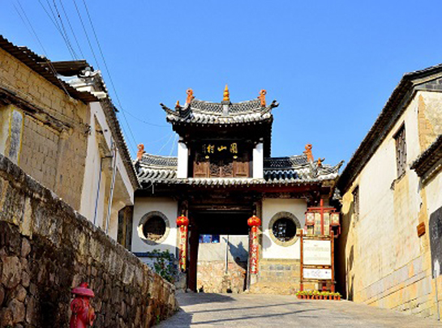

- 行程特色
- 行程简介
- 预定须知
行程特色
-
美 景：
汉族青砖四合大院——元阳梯田——东川红土地 -
团队用餐：
全程中式午晚餐，五菜一汤 -
住宿安排：
温馨的家 -
安心旅行：
赠送最高保额30万境外旅游意外救援保险，让您
玩得更放心 -
优秀团队：
精选带团经验丰富，具备专业讲解知识导游带队；
行程简介
第一天|各地——昆明
餐食：晚餐
住宿：昆明
各地飞往历史文化名城云南昆明（注意：请在航班起飞前 90分钟到达飞机场）到达昆明后，可自行前往昆明的石林 、九乡、滇池等特色景区游玩。18:00酒店大厅集合，由 活动方安排分车及安排行前说明交流会。 温馨提示：大交通可以委托老陈自驾机票客服小刘（133 82069500）预订，也可以自行预订，订票前请和领队确 认名额。第二天|昆明——建水
餐食：早餐、晚餐
住宿：建水
酒店早餐后，前往由传统的汉族青砖四合大院、彝族土掌 房和汉彝结合的瓦檐土掌房三类建筑风格结合的民居世界 ——团山民居，团山至今还保存着的完整古村落整体格局 ，有着滇南乡村特色风貌与传统社会人文环境的原生态特 点，世所罕见，极为珍贵。到达建水县城后，前往参观朱 家花园，有一组规模宠大的清代民居建筑，有“滇南大观 园”之誉！房间内的床，凳，桌，椅均采用紫木雕刻，体 现清代风格，门僮及导游小姐的服饰和接待客人的清式礼 仪，让人有恍若置身百年前历史生活的感受。  第三天|建水——元阳
餐食：早餐、晚餐
住宿：元阳
酒店早餐后，前往中国最美的元阳梯田。元阳哈尼梯田主 要有三大核心区组成——【坝达景区】、【老虎嘴景区】 、【多依树景区】，去老虎嘴俯看梯田是很好的选择，60 00多亩梯田分布于深谷，像一朵巨大的花蕊，老虎嘴被美 国摄影家称为世界上最壮丽的田园风光；晚上看夕阳，则 应该选择坝达景区，在龙树坝拍日落也是不错的选择；感 受大自然的鬼斧神工，19万亩映着蓝天的哈尼梯田就在你 的脚下，哈尼梯田有一千多年的历史，至今科学仍无法解 答，这样大面积的，在这崇山峻岭中是怎么挖掘的。预定须知
1、交通：起亚狮跑或现代IX35（4人1车，1000元/人，如不 足4人1车，需补车费）
2、通讯：通讯设备，车标， <车队出行的后勤服务>组织费用
3、用餐：6早6晚，（晚餐60元/人）
4、住宿：建水住五星标准；昆明，元阳，玉溪住四星标准； 东川红土地住三星标准
5、保险：太平洋旅游意外险
6、领队：优秀领队及当地导游服务
7、景点：建水朱家花园，团山民居，元阳梯田，红河那诺梯 田，东川红土地。
【费用不含】1、各地往返昆明机票自理
2、全程中餐自理，不占床位早餐请自理
3、车辆的油费，路桥费，停车费用
4、全程用餐过程中客人所点的酒水费用
5、酒店电话费，洗衣费，购物等个人消费
【活动时间】2015年12月27日—2016年1月2日
【租车说明】1、本行程车辆是由组织方向当地租车公司代租；租车费用由 组织方承担。基本车型：起亚狮跑；车型升级需增加车费。
2、租车流程：
a. 拿车手续
驾车人需带齐本人身份证、驾驶证和信用卡壹张，凭上述证件 办理租用手续；信用卡额度不得低于10000元人民币，租车的 时候需刷8000元的预授权（神州租车规定）。
b. 归还所租车辆，办理还车手续后，即解除8000元预授权。 c. 交通违章的处罚，还车时需要刷2000元的违章预授权；作 为交通违章押金，在还车之后一个月内无违章的情况下自动解 除冻结；如有违章,驾车人自行处理违章并通知租车公司后， 则解除2000元的预授权；或者请租车公司代为办理违章，费 用从2000元预授权中扣除，剩余的部分则解除预授。
d. 行车所产生的油费路桥费包括停车费均由车上客人均摊， 另有约定的除外。
【注意事项】1、提前做好汽车检查和保养。提前准备好随车工具、备胎、 润滑油等，检查户外装备是否齐全。遇旅途中出现意外事故， 承办方有义务和责任为客人协助解决相关问题，但不负事故责 任和经济赔偿，如产生赔偿将按保险公司规定赔偿。如遇人力 不可抗拒因素所产生的费用由客人自理，如塌方、自然灾害等
2、游客必须身体健康，游程中应遵守纪律，发扬团结互助的 精神，必须听从领队劝说不可擅自行动，否则后果自负。
3、请自备好照相机、胶卷、防晒霜、爱好摄影、注意照看相 关器材。
4、自驾车请保持在高速路上的车距，行驶中望车主自觉遵守 相关交通规则，不随意超车，严禁在弯道处停车、听从领队安 排协调。
5、长时间在户外活动，请戴上太阳镜，涂抹防晒霜以护肤； 爱护环境，安全第一，全部垃圾带出景区。
行程简介
用户评论
- 综合评价：
- 15人出游
- 2条评论
- E29****329
- 综合评价：
- 2015-12-21
- 18号就结束行程了，现在才来评价，总的来说还是不错的。
- 行程安排：满意
- 住宿餐食：满意
- 旅行交通：满意
- E29****329
- 综合评价：
- 2015-12-21
行程安排：
住宿餐食：
旅行交通：
行程安排总体满意，第二天的购物关键的重点在 于华克山庄，只有60分钟，那里虽然小 折扣真 的便宜。
住宿第一天在水原（偏僻些），后三天在加阳怀 旧酒店。周围有地铁加阳站，打车到明洞一万多 点。还可以。周围吃饭的多，很方便。
交通基本我们是早晨地铁出 晚上打车回。首尔打 车还可以把，不太堵。